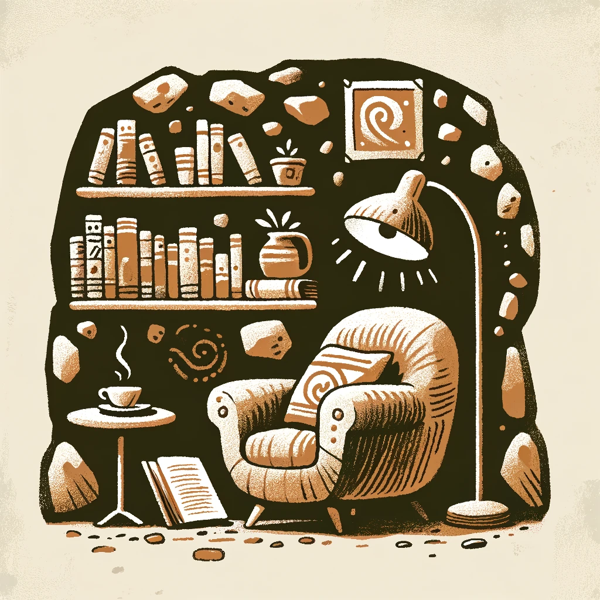
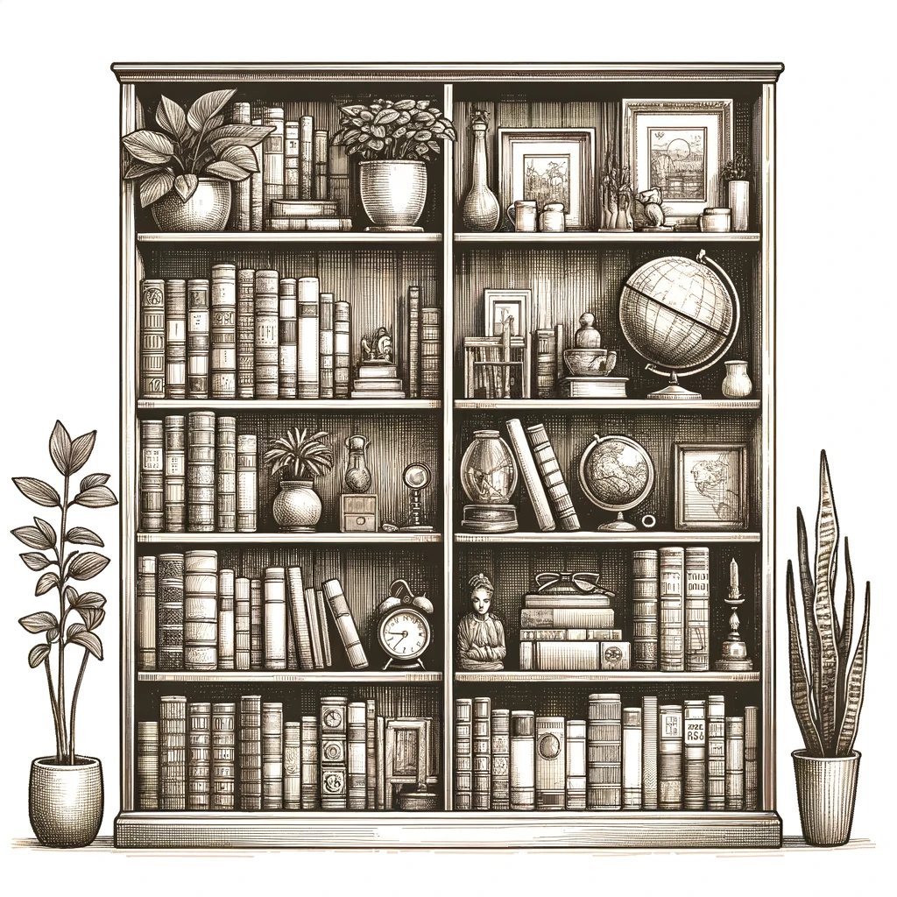

Introducción
Esta página web fue diseñada en la asignatura "Literatura y Escritura en Castellano". Esta asignatura nos brindó muchos conocimientos, pero también nos dio a conocer muchos textos literarios y sobre todo muchos autores importantes a nivel internacional. Toda esta información está compilada en esta página, con algunos de los autores, algunas de sus obras y una biografía breve, destacando una obra en específico.

